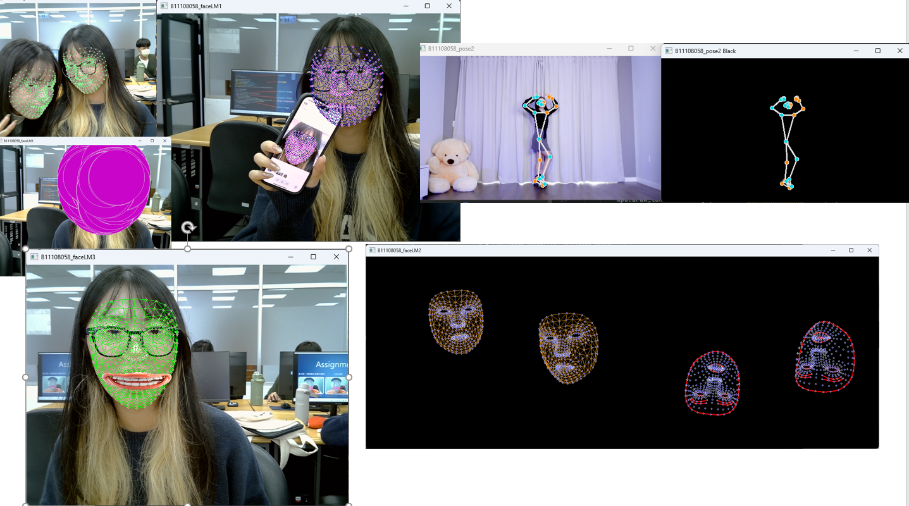

虛擬背景製作
運用綠幕技術製作各種風格的虛擬背景效果，包含可愛風格與動漫風格。
歡迎來到我的個人網站！這裡記錄了我在學習與實作過程中的點滴成果與專案，邀請你一同見證我的成長旅程。
運用綠幕技術製作各種風格的虛擬背景效果，包含可愛風格與動漫風格。
實現即時臉部辨識功能，能夠生成臉部網格及添加特效濾鏡。
開發手勢識別系統，能夠即時檢測和分析手部動作，實現互動功能。
開發基於Gemma的多模態與純文字LLM應用，整合影像辨識與自然語言處理技術。
使用 Teachable Machine 開發的即時影像辨識系統，可透過網路攝影機進行即時物體識別。
開發互動式 AI 塔羅占卜系統，整合大型語言模型進行個人化塔羅牌解讀。使用者可輸入問題，並透過攝影機拍攝代表當下心情的小物，由系統擷取並分析其顏色作為解讀依據之一。接著從牌堆中抽取三張塔羅牌，最終結合問題內容、心情顏色與抽牌結果，生成溫暖而具洞察力的專業塔羅解讀。
👉 滑動查看塔羅解讀示範圖片：
Email: b11108058@gapps.ntust.edu.tw